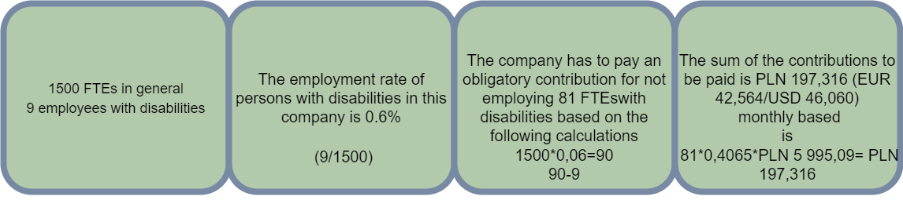

Financial benefits
Examples of calculations of financial benefits when using a multiple deductions method for companies hiring 647 and 1,500 employees
In order to avoid payments to PFRON by employing persons with disabilities, the employment rate of such persons should be at least 6%.
COMPANY 1 - hiring 647 FTEs - real life example
Company profile: A manufacturing/logistics company. Physical work prevails. Such companies find it most difficult to avoid penalties for PFRON.
BASELINE:
.png)
What is an optimal way to fill 34,8 full-time positions with disabled persons and forget about contributions paid to PFRON?
The fastest solution is to employ remote workers (from any part of Poland) who are entitled to a triple or fourfold PFRON allowance.
The solution adopted by the employer for reducing of PFRON payments:
- employment of one person with a single deduction from PFRON. This person is a "handyman" for physical work. It was not possible to find a person with a disability with multiple deductions for this position
- employment for other vacancies persons with triple or fourfold deductions from PFRON for the fully remote office jobs. Most of them were able to come to the company's premises for a few days of training; however, this was not required. Some disabled persons with severe conditions (in wheelchairs) were trained online.
One person with a fourfold deductions (PLN 9,744/EUR 2,096/USD 2,096) received a gross salary of PLN 8,000 (EUR 1,721/EUR 1,856). The employer's costs (to cover her salary) are PLN 9,600 (EUR 2,065/USD 2,227). Another person has an excellent knowledge of Excel and B2 level English. She is entitled to a triple deductions (PLN 7,308/EUR 1,572/USD 1,695). She will earn PLN 5,000 gross (EUR 1,075 /USD 1,160). The employer's costs are about PLN 6,000 (EUR 1,290/USD 1,392).
COMPANY 2 - hiring 1500 FTEs
Company profile:office work prevails - banking, insurance sectors, etc. at the headquarters of the X company.
BASELINE:
The solution that can be adopted by the employer for the fastest reduction of PFRON payments:
- employment of 20 people with the fourfold deduction (20*4=80) and one at 0.25 FTE (4*0.25 = 1).
Let us assume that the employer hires these 21 persons on 81 full-time positions paying on average for the whole position PLN 3,900 gross (employer's costs PLN 4,680).
In case of employing one person from the amount of four times allowance (PLN 9,744) 48% is spent on salaries of persons with disabilities. 52% of the amount is left on the company account.
Annually it gives no less than PLN 1.231.252 (EUR 265,555/USD 286,991)